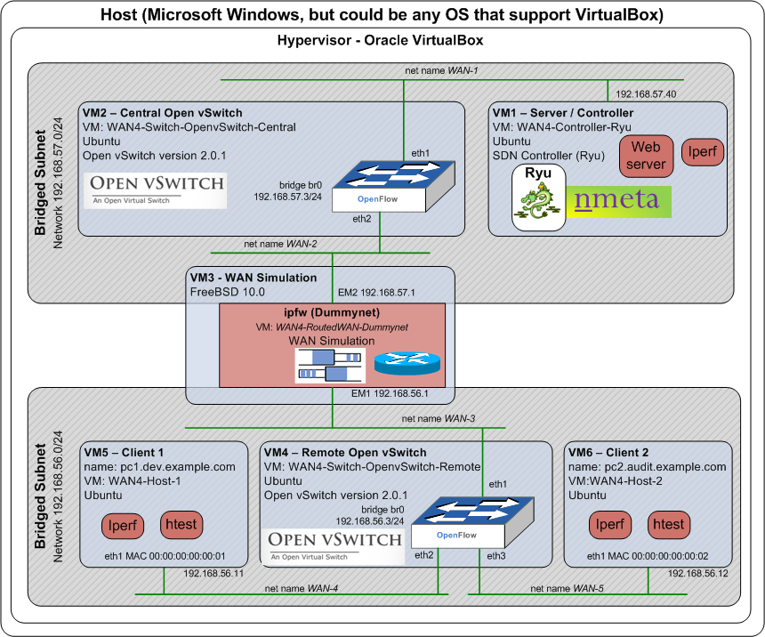
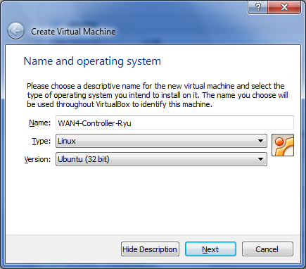
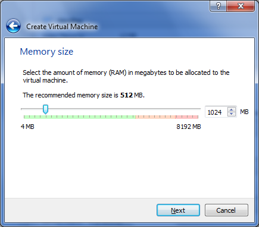
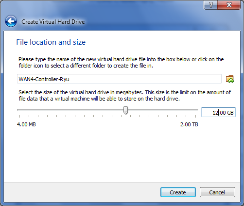
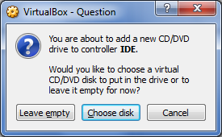
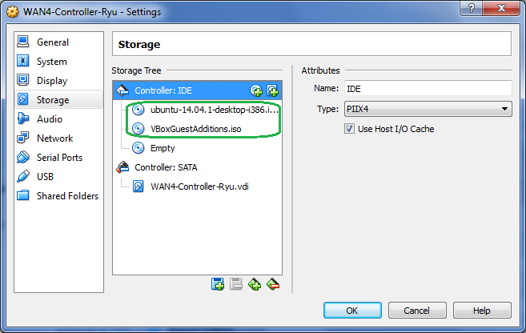
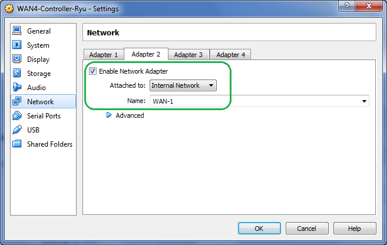
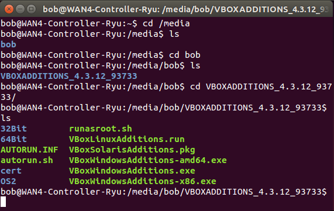
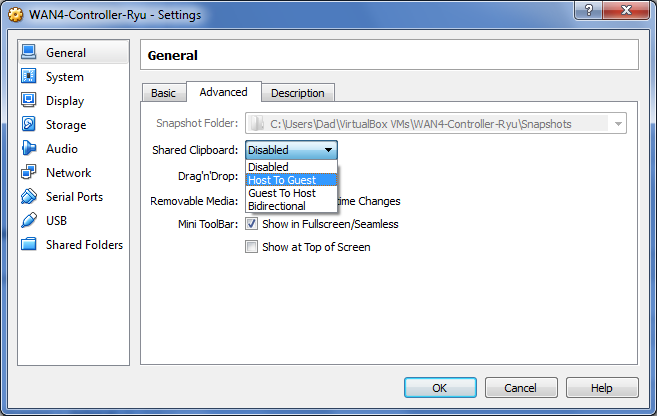

Build Yourself a Virtual OpenFlow Lab
*** Under Construction!!! ***
Want to experiment with nmeta and OpenFlow SDN, but don't have any switches? No problem. You can build a simple, but powerful, lab within a virtualised environment. These instructions should hopefully save you a lot of time figuring out the more obtuse features. Oracle VirtualBox is used as the hypervisor. Here is a logical diagram of the environment

Pre-Requisites
- Oracle VirtualBox installed on a suitable host machine
- Host must have sufficient RAM (test PC was Windows 7 with 8GB RAM)
VM1 Server / Controller
Download a suitable supported Ubuntu desktop distribution. In VirtualBox, create a new Ubuntu guest with 1024MB of RAM and 12GB of storage. Consider creating the hard disk as fixed size to improve performance.



Go into the guest settings to configure it to boot off the ISO. Under Storage, click on the Controller: IDE row and then click on the Add CD/DVD Device Icon, "Choose disk" and browse to the ISO:


Do the same process to add the ISO for the Guest Additions. On Windows it is located in C:\Program Files\Oracle\VirtualBox\VBoxGuestAdditions.iso

As above, there should now be two ISO files associated.
Go into the Network settings and leave Adapter 1 as per defaults to allow NAT access to the Internet (required for downloading software packages from the Internet). Configure Adapter 2 as per screenshot below to connect to Internal Network "WAN-1":

Start the VM and install Ubuntu as per the defaults (or your own preferences!)
Install VirtualBox Additions
Once the build is completed and the guest is running, log in and start a terminal window (CTRL+ALT+T). Install the VirtualBox additions for improved host-guest integration:
cd /media
Look for the appropriate subdirectories that contain the correct additions version. Example:

Run the additions:
sudo ./VBoxLinuxAdditions.run
Restart the guest to bring the additions online. You may also want to change the copy/paste settings in VirtualBox to allow pasting to the guest:

Configure Networking
Edit /etc/network/interfaces:
sudo vi /etc/network/interfaces
Add the following:
auto eth1
iface eth1 inet static
address 192.168.57.40
netmask 255.255.255.0
#
up route add -net 192.168.56.0/24 gw 192.168.57.1 dev eth1
Restart networking:
sudo /etc/init.d/networking restart
Now, install Ryu, nmeta etc as per instructions on the Installation Page
VM2 Central Open vSwitch
Create a new Ubuntu guest (minimum version 14.04 due to additional of in-tree kernel support for Open vSwitch) with 512MB of RAM and 8GB of storage, as per instructions for VM1, but with the following differences:
- Leave Adapter 1 as per defaults to allow NAT access to the Internet. Configure Adapter 2 and 3 as per screenshots below:
*** Under Construction!!! ***